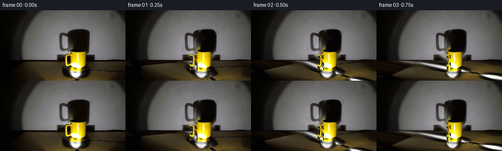
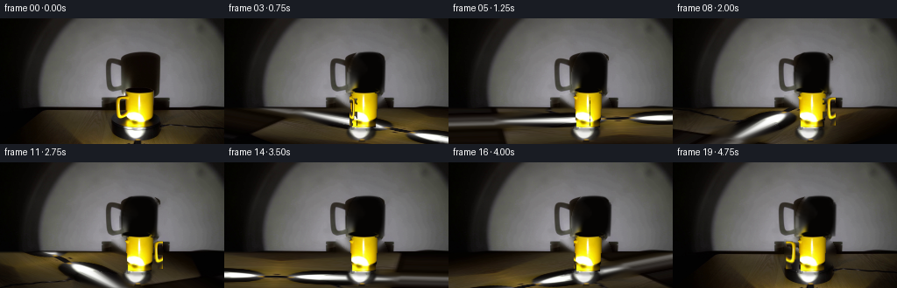

CODING AGENTS AS PIXEL WORLD MODELS
traex/DeepSeek-V4.1-Flash · 0077
点击播放 · 原生 RGB 像素
逐轮保存的候选
回放视频、检查图与代码变化。
每份候选均可单独播放。实际图片检查记录在下方工具轨迹中。
候选 01播放与检查图
点击播放 · 原生 RGB 像素


展开代码变化
--- 上一保存版本
+++ 本次保存版本
@@ -0,0 +1,235 @@
+from pathlib import Path
+
+import cv2
+import numpy as np
+from PIL import Image
+
+import artifact_io
+
+
+ROOT = Path(__file__).resolve().parent
+SRC = np.array(Image.open(ROOT / "first_frame.png").convert("RGB"))
+H, W = SRC.shape[:2]
+FRAMES = 20
+FPS = 4
+
+
+def smoothstep(edge0, edge1, x):
+ t = np.clip((x - edge0) / (edge1 - edge0), 0.0, 1.0)
+ return t * t * (3.0 - 2.0 * t)
+
+
+def alpha_over(dst, color, alpha):
+ alpha = np.asarray(alpha, dtype=np.float32)[..., None]
+ color = np.asarray(color, dtype=np.float32)
+ return dst * (1.0 - alpha) + color * alpha
+
+
+def build_clean_plate():
+ mask = np.zeros((H, W), np.uint8)
+ cv2.ellipse(mask, (157, 104), (29, 24), 0, 0, 360, 255, -1)
+ cv2.rectangle(mask, (127, 88), (145, 120), 255, -1)
+ bgr = cv2.cvtColor(SRC, cv2.COLOR_RGB2BGR)
+ clean = cv2.inpaint(bgr, mask, 7, cv2.INPAINT_TELEA)
+ return cv2.cvtColor(clean, cv2.COLOR_BGR2RGB).astype(np.float32)
+
+
+def build_wall_shadow():
+ wall_mask = np.zeros((H, W), np.uint8)
+ cv2.ellipse(wall_mask, (163, 68), (23, 34), 0, 0, 360, 255, -1)
+ wall_mask[85:, :] = 0
+
+ bgr = cv2.cvtColor(SRC, cv2.COLOR_RGB2BGR)
+ clean_bgr = cv2.inpaint(bgr, wall_mask, 6, cv2.INPAINT_TELEA)
+ clean = cv2.cvtColor(clean_bgr, cv2.COLOR_BGR2RGB).astype(np.float32)
+
+ obs_lum = SRC.astype(np.float32).mean(axis=2)
+ clean_lum = clean.mean(axis=2)
+ alpha = np.clip((clean_lum - obs_lum) / np.maximum(clean_lum, 1.0), 0.0, 1.0)
+ alpha = np.clip((alpha - 0.08) / 0.84, 0.0, 1.0)
+ alpha[85:, :] = 0.0
+ alpha = cv2.GaussianBlur(alpha, (3, 3), 0.55)
+ return clean.astype(np.float32), alpha.astype(np.float32)
+
+
+def animate_shadow(frame, clean_wall, shadow_alpha, angle):
+ scale_x = 1.0 + 0.055 * np.cos(angle)
+ shift_x = 3.6 * np.sin(angle)
+ cx, cy = 163.0, 66.0
+ inv_scale = 1.0 / scale_x
+ matrix = np.array(
+ [[inv_scale, 0.0, cx - (cx + shift_x) * inv_scale], [0.0, 1.0, 0.0]],
+ dtype=np.float32,
+ )
+ warped = cv2.warpAffine(
+ shadow_alpha,
+ matrix,
+ (W, H),
+ flags=cv2.INTER_LINEAR,
+ borderMode=cv2.BORDER_CONSTANT,
+ borderValue=0.0,
+ )
+ warped = np.clip(warped * 1.03, 0.0, 1.0)
+
+ region = np.zeros((H, W), dtype=bool)
+ region[34:85, 136:190] = True
+ shadow_rgb = np.empty_like(frame)
+ shadow_rgb[:] = (5.0, 4.0, 3.0)
+ blended = alpha_over(clean_wall, shadow_rgb, warped)
+ frame[region] = blended[region]
+ return frame
+
+
+def rotate_platform(clean_plate, angle):
+ yy, xx = np.mgrid[0:H, 0:W].astype(np.float32)
+ cx, cy = 128.0, 124.0
+ rx, ry = 162.0, 47.0
+ dx = (xx - cx) / rx
+ dy = (yy - cy) / ry
+
+ # Clockwise platform motion is sampled with the inverse rotation.
+ c, s = np.cos(angle), np.sin(angle)
+ dxr = c * dx - s * dy
+ dyr = s * dx + c * dy
+ map_x = cx + rx * dxr
+ map_y = cy + ry * dyr
+ map_y = np.maximum(map_y, 102.0)
+
+ source_bgr = cv2.cvtColor(clean_plate.astype(np.uint8), cv2.COLOR_RGB2BGR)
+ warped_bgr = cv2.remap(
+ source_bgr,
+ np.ascontiguousarray(map_x, dtype=np.float32),
+ np.ascontiguousarray(map_y, dtype=np.float32),
+ interpolation=cv2.INTER_LINEAR,
+ borderMode=cv2.BORDER_REFLECT,
+ )
+ warped = cv2.cvtColor(warped_bgr, cv2.COLOR_BGR2RGB).astype(np.float32)
+
+ platform = smoothstep(100.8, 104.5, yy)
+ hotspot = np.zeros((H, W), dtype=np.float32)
+ hotspot = cv2.ellipse(
+ hotspot, (156, 130), (16, 10), 0, 0, 360, 1.0, -1
+ )
+ hotspot = cv2.GaussianBlur(hotspot, (5, 5), 1.1)
+ blend = platform * (1.0 - 0.92 * hotspot)
+ return clean_plate * (1.0 - blend[..., None]) + warped * blend[..., None]
+
+
+def build_body_sprite():
+ yy, xx = np.mgrid[0:H, 0:W].astype(np.float32)
+ cx = 159.0
+ top_center = 88.5
+ rx = 16.0
+ ry = 5.8
+
+ top = ((xx - cx) / rx) ** 2 + ((yy - top_center) / ry) ** 2 <= 1.0
+ lower = yy >= top_center
+ taper = 0.075 * (yy - 90.0)
+ left = 143.0 + taper
+ right = 175.0 - taper
+ bottom = 124.0 + 1.35 * np.sqrt(
+ np.clip(1.0 - ((xx - cx) / 15.6) ** 2, 0.0, 1.0)
+ )
+ lower &= (yy <= bottom) & (xx >= left) & (xx <= right)
+
+ alpha = (top | lower).astype(np.float32)
+ alpha = cv2.GaussianBlur(alpha, (3, 3), 0.45)
+ return SRC.astype(np.float32), alpha
+
+
+def build_handle_sprite():
+ x0, x1, y0, y1 = 127, 144, 86, 122
+ crop = SRC[y0:y1, x0:x1]
+ hsv = cv2.cvtColor(crop, cv2.COLOR_RGB2HSV)
+ h, s, v = [hsv[:, :, i] for i in range(3)]
+ r, g, b = [crop[:, :, i].astype(np.float32) for i in range(3)]
+ mask = (
+ ((s > 62) & (h < 46) & (v > 24))
+ | ((r > 58) & (g > 28) & (b < 125) & (r > g * 0.95))
+ )
+ alpha = mask.astype(np.float32)
+ alpha = cv2.morphologyEx(alpha, cv2.MORPH_CLOSE, np.ones((2, 2), np.uint8))
+ alpha = cv2.GaussianBlur(alpha, (3, 3), 0.42)
+
+ rgba = np.zeros((H, W, 4), dtype=np.float32)
+ rgba[y0:y1, x0:x1, :3] = crop.astype(np.float32)
+ rgba[y0:y1, x0:x1, 3] = alpha
+ return rgba, (x0 + x1 - 1) * 0.5, (y0 + y1 - 1) * 0.5
+
+
+def warped_handle(handle_rgba, source_cx, source_cy, angle):
+ sin_a = np.sin(angle)
+ cos_a = np.cos(angle)
+ target_cx = 159.0 + 21.8 * sin_a
+ target_cy = 104.0 + 0.45 * cos_a
+ sx = max(0.035, abs(sin_a))
+ sy = 1.0 + 0.018 * cos_a
+ mirror = 1.0 if sin_a >= 0.0 else -1.0
+
+ matrix = np.array(
+ [
+ [sx * mirror, 0.0, target_cx - sx * mirror * source_cx],
+ [0.0, sy, target_cy - sy * source_cy],
+ ],
+ dtype=np.float32,
+ )
+ warped = cv2.warpAffine(
+ handle_rgba,
+ matrix,
+ (W, H),
+ flags=cv2.INTER_LINEAR,
+ borderMode=cv2.BORDER_CONSTANT,
+ borderValue=(0.0, 0.0, 0.0, 0.0),
+ )
+ warped[..., 3] *= 0.82 + 0.18 * abs(sin_a)
+ return warped
+
+
+def composite_rgba(frame, rgba):
+ alpha = np.clip(rgba[..., 3:4], 0.0, 1.0)
+ return frame * (1.0 - alpha) + rgba[..., :3] * alpha
+
+
+def add_contact_shadow(frame):
+ shadow = np.zeros((H, W), dtype=np.float32)
+ shadow = cv2.ellipse(shadow, (159, 125), (17, 4), 0, 0, 360, 0.30, -1)
+ shadow = cv2.GaussianBlur(shadow, (7, 5), 1.25)
+ return alpha_over(frame, (4.0, 3.0, 2.0), shadow)
+
+
+def main():
+ clean_plate = build_clean_plate()
+ clean_wall, shadow_alpha = build_wall_shadow()
+ body_rgb, body_alpha = build_body_sprite()
+ handle_rgba, handle_cx, handle_cy = build_handle_sprite()
+ body_rgba = np.concatenate([body_rgb, body_alpha[..., None]], axis=2)
+
+ frames = np.empty((FRAMES, H, W, 3), dtype=np.uint8)
+ frames[0] = SRC
+
+ for index in range(1, FRAMES):
+ t = index / (FRAMES - 1)
+ angle = -np.pi / 2.0 + 2.0 * np.pi * t
+ platform_angle = 2.0 * np.pi * t
+
+ frame = clean_plate.copy()
+ frame = animate_shadow(frame, clean_wall, shadow_alpha, angle)
+ frame = rotate_platform(frame, platform_angle)
+ frame = add_contact_shadow(frame)
+
+ handle = warped_handle(handle_rgba, handle_cx, handle_cy, angle)
+ if np.cos(angle) < 0.0:
+ frame = composite_rgba(frame, handle)
+ frame = composite_rgba(frame, body_rgba)
+ else:
+ frame = composite_rgba(frame, body_rgba)
+ frame = composite_rgba(frame, handle)
+
+ frames[index] = np.clip(frame, 0, 255).astype(np.uint8)
+
+ assert np.array_equal(frames[0], SRC)
+ artifact_io.save(frames, ROOT)
+
+
+if __name__ == "__main__":
+ main()
候选 02播放与检查图
点击播放 · 原生 RGB 像素

展开代码变化
--- 上一保存版本
+++ 本次保存版本
@@ -27,7 +27,7 @@
def build_clean_plate():
mask = np.zeros((H, W), np.uint8)
- cv2.ellipse(mask, (157, 104), (29, 24), 0, 0, 360, 255, -1)
+ cv2.ellipse(mask, (158, 104), (30, 24), 0, 0, 360, 255, -1)
cv2.rectangle(mask, (127, 88), (145, 120), 255, -1)
bgr = cv2.cvtColor(SRC, cv2.COLOR_RGB2BGR)
clean = cv2.inpaint(bgr, mask, 7, cv2.INPAINT_TELEA)
@@ -36,7 +36,7 @@
def build_wall_shadow():
wall_mask = np.zeros((H, W), np.uint8)
- cv2.ellipse(wall_mask, (163, 68), (23, 34), 0, 0, 360, 255, -1)
+ cv2.ellipse(wall_mask, (163, 68), (24, 35), 0, 0, 360, 255, -1)
wall_mask[85:, :] = 0
bgr = cv2.cvtColor(SRC, cv2.COLOR_RGB2BGR)
@@ -53,8 +53,8 @@
def animate_shadow(frame, clean_wall, shadow_alpha, angle):
- scale_x = 1.0 + 0.055 * np.cos(angle)
- shift_x = 3.6 * np.sin(angle)
+ scale_x = 1.0 + 0.072 * np.cos(angle)
+ shift_x = 4.2 * np.sin(angle)
cx, cy = 163.0, 66.0
inv_scale = 1.0 / scale_x
matrix = np.array(
@@ -111,7 +111,7 @@
hotspot, (156, 130), (16, 10), 0, 0, 360, 1.0, -1
)
hotspot = cv2.GaussianBlur(hotspot, (5, 5), 1.1)
- blend = platform * (1.0 - 0.92 * hotspot)
+ blend = platform * (1.0 - 0.90 * hotspot)
return clean_plate * (1.0 - blend[..., None]) + warped * blend[..., None]
@@ -133,7 +133,7 @@
lower &= (yy <= bottom) & (xx >= left) & (xx <= right)
alpha = (top | lower).astype(np.float32)
- alpha = cv2.GaussianBlur(alpha, (3, 3), 0.45)
+ alpha = cv2.GaussianBlur(alpha, (3, 3), 0.35)
return SRC.astype(np.float32), alpha
@@ -162,7 +162,7 @@
cos_a = np.cos(angle)
target_cx = 159.0 + 21.8 * sin_a
target_cy = 104.0 + 0.45 * cos_a
- sx = max(0.035, abs(sin_a))
+ sx = 0.19 + 0.81 * abs(sin_a)
sy = 1.0 + 0.018 * cos_a
mirror = 1.0 if sin_a >= 0.0 else -1.0
@@ -181,7 +181,7 @@
borderMode=cv2.BORDER_CONSTANT,
borderValue=(0.0, 0.0, 0.0, 0.0),
)
- warped[..., 3] *= 0.82 + 0.18 * abs(sin_a)
+ warped[..., 3] *= 0.88 + 0.12 * abs(sin_a)
return warped
@@ -192,7 +192,7 @@
def add_contact_shadow(frame):
shadow = np.zeros((H, W), dtype=np.float32)
- shadow = cv2.ellipse(shadow, (159, 125), (17, 4), 0, 0, 360, 0.30, -1)
+ shadow = cv2.ellipse(shadow, (159, 125), (16, 3), 0, 0, 360, 0.19, -1)
shadow = cv2.GaussianBlur(shadow, (7, 5), 1.25)
return alpha_over(frame, (4.0, 3.0, 2.0), shadow)
候选 03播放与检查图
可观测工具轨迹
实际执行的命令与返回图片。
命令 1exit 0
/bin/bash -c "pwd && rg --files -g '"'!*.mp4'"' -g '"'!*.mov'"' -g '"'!*.webm'"'"
命令 2exit 0
/bin/bash -c "sed -n '1,240p' prompt.txt"
命令 3exit 0
/bin/bash -c "sed -n '1,280p' GENERATION_RULES.md"
命令 4exit 0
/bin/bash -c 'file first_frame.png && identify first_frame.png 2>/dev/null || true && ls -lah'
命令 5exit 0
/bin/bash -c "sed -n '1,260p' artifact_io.py"
命令 6exit 0
/bin/bash -c "sed -n '1,240p' player_template.html"
命令 7exit 0
/bin/bash -c "python - <<'PY'
from PIL import Image
im=Image.open('first_frame.png').convert('RGB')
print(im.size, im.mode)
from collections import Counter
c=Counter(im.getdata())
print('colors',len(c))
for col,n in c.most_common(30): print(col,n)
PY"命令 8exit 0
/bin/bash -c "python - <<'PY'
from PIL import Image
import numpy as np
im=np.array(Image.open('first_frame.png').convert('RGB'))
# masks
r,g,b=[im[:,:,i] for i in range(3)]
masks={
'yellow':(r>110)&(g>55)&(b<55)&(r>g*1.3),
'bright':(r>170)&(g>170)&(b>170),
'gray':(abs(r.astype(int)-g)<10)&(abs(g.astype(int)-b)<10)&(r>55),
'red':(r>70)&(r>g*1.5)&(r>b*1.5),
'green':(g>50)&(g>r*1.2)&(g>b*1.2),
}
for name,m in masks.items():
ys,xs=np.where(m)
print(name, len(xs), 'bbox', (xs.min(),ys.min(),xs.max(),ys.max()) if len(xs) else None, 'centroid', (xs.mean(),ys.mean()) if len(xs) else None)
# row/col peak bins
if len(xs):
hy,_=np.histogram(ys,bins=range(0,145,8)); hx,_=np.histogram(xs,bins=range(0,257,8))
print(' y8',list(hy));print(' x8',list(hx))
# unique quantized 16 colors
q=(im//32)*32
uq,c=np.unique(q.reshape(-1,3),axis=0,return_counts=True)
inds=np.argsort(c)[-20:][::-1]
print('quantized')
for i in inds: print(tuple(uq[i]), int(c[i]))
PY"命令 9exit 0
/bin/bash -c "python - <<'PY'
from PIL import Image
import numpy as np
im=np.array(Image.open('first_frame.png').convert('RGB')).astype(float)
H,W=im.shape[:2]
# 2x2 cells -> 128x72, brightness and hue class
bs=im.mean(2)
chars=' .,:;irsXA253hMHGS#9B&@'
for y in range(0,H,2):
line=''
for x in range(0,W,2):
c=im[y:y+2,x:x+2].mean((0,1)); r,g,b=c
mx=max(c); mn=min(c)
if r>100 and g>50 and b<70 and r>g*1.25: ch='Y'
elif r>180 and g>170 and b<100: ch='y'
elif mx-mn<12 and mx>160: ch='W'
elif mx-mn<15 and mx>90: ch='#'
elif mx-mn<20 and mx>35: ch='+'
elif r>g*1.5 and r>b*1.5 and r>50: ch='R'
elif g>r*1.35 and g>b*1.2 and g>45: ch='G'
else:
v=c.mean(); ch=chars[min(len(chars)-1,int((v/256)**0.55*len(chars)))]
line+=ch
print(f'{y:03d} '+line)
PY"命令 10exit 1
/bin/bash -c "python - <<'PY'
from PIL import Image
import numpy as np
im=np.array(Image.open('first_frame.png').convert('RGB'))
# classify crop x105-190 y60-144 at full pixel resolution grouped 2x1 for compact
for y in range(60,144,2):
line=''
for x in range(105,190,2):
c=im[y:y+2,x:x+2].reshape(-1,3).mean(0); r,g,b=c
mx,mn=max(c),min(c)
if r>95 and g>45 and b<80 and r>g*1.18: ch='Y'
elif r>180 and g>170 and b<110: ch='y'
elif mx-mn<13 and mx>165: ch='W'
elif mx-mn<15 and mx>95: ch='#'
elif mx-mn<20 and mx>45: ch='+'
elif mx-mn<25 and mx>18: ch='-'
elif r>g*1.35 and r>b*1.3 and r>38: ch='R'
elif b>r*1.25 and b>g*1.1 and b>35: ch='B'
elif g>r*1.25 and g>b*1.15 and g>35: ch='G'
else:
v=sum(c)/3; ch=' .'[v>4]
line+=ch
print(f'{y:03d} '+line)
PY"命令 11exit 0
/bin/bash -c "python - <<'PY'
from PIL import Image
import numpy as np
im=np.array(Image.open('first_frame.png').convert('RGB'))
for y in range(60,144,2):
line=''
for x in range(105,190,2):
c=im[y:y+2,x:x+2].reshape(-1,3).mean(0); r,g,b=c
mx,mn=max(c),min(c)
if r>95 and g>45 and b<80 and r>g*1.18: ch='Y'
elif r>180 and g>170 and b<110: ch='y'
elif mx-mn<13 and mx>165: ch='W'
elif mx-mn<15 and mx>95: ch='#'
elif mx-mn<20 and mx>45: ch='+'
elif mx-mn<25 and mx>18: ch='-'
elif r>g*1.35 and r>b*1.3 and r>38: ch='R'
elif b>r*1.25 and b>g*1.1 and b>35: ch='B'
elif g>r*1.25 and g>b*1.15 and g>35: ch='G'
else:
v=sum(c)/3; ch='.' if v>4 else ' '
line+=ch
print(f'{y:03d} '+line)
PY"命令 12exit 0
/bin/bash -c "python - <<'PY'
from PIL import Image
im=Image.open('first_frame.png')
im.crop((105,55,195,144)).resize((720,712),Image.Resampling.NEAREST).save('.tmp/mug_crop.png')
im.crop((0,0,256,144)).resize((1024,576),Image.Resampling.NEAREST).save('.tmp/full_zoom.png')
PY"命令 13exit 0
/bin/bash -c "python - <<'PY' mods=['cv2','scipy','skimage','numpy','PIL'] for m in mods: try: mod=__import__(m); print(m,'ok',getattr(mod,'__version__','')) except Exception as e: print(m,'missing',e) PY"
命令 14exit 0
/bin/bash -c "python - <<'PY'
import cv2, numpy as np
im=cv2.imread('first_frame.png')
g=cv2.cvtColor(im,cv2.COLOR_BGR2GRAY)
# sample 8x8 mean/median grid numeric brightness and hue class
for y in range(0,144,8):
row=[]
for x in range(0,256,8):
c=im[y:y+8,x:x+8].mean((0,1)) # BGR
b,gc,r=c
row.append(f'{int(r):3d},{int(gc):3d},{int(b):3d}')
print(f'y={y:3d}: '+' | '.join(row))
PY"命令 15exit 0
/bin/bash -c "python - <<'PY'
from PIL import Image
import numpy as np
im=np.array(Image.open('first_frame.png').convert('RGB'))
# coarse crop with class and exact dominant quantized color at 2x2
for y in range(76,145,2):
line=''
for x in range(108,190,2):
c=im[y:y+2,x:x+2].reshape(-1,3).mean(0)
if c.max()-c.min()<12: ch='.'
elif c[0]>c[2]*2.3 and c[1]>c[2]*2.0 and c[0]>55: ch='O' # orange
elif c[0]>c[1]*1.5 and c[0]>c[2]*2 and c[0]>90: ch='R'
elif c[1]>c[0]*1.3 and c[1]>c[2]*1.6 and c[1]>55: ch='G'
elif c[2]>c[0]*1.2 and c[2]>c[1]*1.1: ch='B'
else: ch='?'
line+=ch
print(f'{y:03d} '+line)
PY"命令 16exit 0
/bin/bash -c "python - <<'PY'
from PIL import Image
import numpy as np
im=np.array(Image.open('first_frame.png').convert('RGB'))
# print representative 4x4 medians grid crop (RGB hex)
for y in range(80,144,4):
vals=[]
for x in range(112,184,4):
c=np.median(im[y:y+4,x:x+4].reshape(-1,3),axis=0).astype(int)
vals.append('%02x%02x%02x'%tuple(c))
print(f'{y:03d} '+' '.join(vals))
PY"命令 17exit 0
/bin/bash -c "python - <<'PY'
from PIL import Image
import numpy as np
im=np.array(Image.open('first_frame.png').convert('RGB'))
for y in range(78,128):
line=''
for x in range(108,190):
r,g,b=im[y,x].astype(int)
mx,mn=int(max(r,g,b)),int(min(r,g,b))
if mx-mn<10 and mx<20: ch=' '
elif mx-mn<14 and mx<45: ch='.'
elif mx-mn<18 and mx<85: ch=':'
elif mx-mn<25 and mx<130: ch='o'
elif mx-mn<35 and mx<190: ch='O'
elif mx-mn<45 and mx<245: ch='@'
elif mx-mn>=45 and r>200 and g>180 and b<100: ch='Y'
elif mx-mn>=45 and r>120 and g>80 and b<90: ch='y'
elif mx-mn>=45 and r>g*1.8 and r>b*1.8: ch='r'
elif mx-mn>=45 and g>r*1.3 and g>b*1.5: ch='g'
elif mx-mn>=45 and b>r*1.2 and b>g*1.1: ch='b'
else: ch='?'
line+=ch
print(f'{y:03d} {line}')
PY"命令 18exit 1
/bin/bash -c "python - <<'PY'
from PIL import Image
import numpy as np
im=np.array(Image.open('first_frame.png').convert('RGB')).astype(int)
r,g,b=im[:,:,0],im[:,:,1],im[:,:,2]
m=(r>90)&(g>40)&(b<85)&(r>g*1.2)&(r>b*2.0)
for y in range(75,145):
line=''
for x in range(100,200):
if m[y,x]: ch='#'
elif y>=128 and r[y,x]>55 and r[y,x]>g[y,x]*1.15: ch='y'
elif r[y,x]>120 and g[y,x]>100 and b[y,x]<110: ch='Y'
elif max(r[y,x],g[y,x],b[y,x])<16: ch=' '
elif max(r[y,x],g[y,x],b[y,x])<35: ch='.'
else: ch='-'
line+=ch
print(f'{y:03d} {line}')
PY"命令 19exit 0
/bin/bash -c "python - <<'PY'
from PIL import Image
import numpy as np
im=np.array(Image.open('first_frame.png').convert('RGB'))
# row segment stats around mug for y 80-125
for y in [82,84,86,88,90,92,94,96,98,100,102,104,106,108,110,112,114,116,118,120,122,124,126]:
seg=im[y,115:178]
# 3px means
vals=[]
for x in range(0,len(seg),3):
c=np.median(seg[x:x+3],axis=0).astype(int)
vals.append('%02x%02x%02x'%tuple(c))
print(y,' '.join(vals))
PY"命令 20exit 0
/bin/bash -c "python - <<'PY'
import cv2, numpy as np
im=cv2.imread('first_frame.png')
g=cv2.cvtColor(im,cv2.COLOR_BGR2GRAY)
# threshold bright top light, get components
for t in [120,150,180,210,230,245]:
_,m=cv2.threshold(g,t,255,cv2.THRESH_BINARY)
n,lab,stats,cent=cv2.connectedComponentsWithStats(m)
comps=sorted([(s[4],s[:4].tolist(),c.tolist()) for s,c in zip(stats[1:],cent[1:])],reverse=True)[:10]
print('thr',t,comps)
PY"命令 21exit 0
/bin/bash -c "python - <<'PY'
import cv2,numpy as np
im=cv2.imread('first_frame.png')
g=cv2.cvtColor(im,cv2.COLOR_BGR2GRAY)
_,m=cv2.threshold(g,120,255,cv2.THRESH_BINARY)
n,l,s,c=cv2.connectedComponentsWithStats(m)
for i,(st,ct) in enumerate(zip(s[1:],c[1:]),1):
if st[4]>1000: print(i,st.tolist(),ct.tolist())
# outline bounding boxes at grayscale levels per region
for name,(x0,y0,x1,y1) in {'mug':(120,75,180,140),'lamp':(65,20,175,110)}.items():
print(name)
for t in [30,60,90,120,160,200,240]:
mm=g[y0:y1,x0:x1]>t
ys,xs=np.where(mm)
print(t, (x0+xs.min(),y0+ys.min(),x0+xs.max(),y0+ys.max()), len(xs))
PY"命令 22exit 0
/bin/bash -c "python - <<'PY'
import cv2, numpy as np
im=cv2.imread('first_frame.png')
g=cv2.cvtColor(im,cv2.COLOR_BGR2GRAY)
# edge in mug crop, upscale chars per pixel threshold Sobel/mag
e=cv2.Canny(g,20,60)
for y in range(72,144):
line=''
for x in range(105,200):
if e[y,x]: ch='#'
elif g[y,x]>220: ch='W'
elif g[y,x]>140: ch='O'
elif g[y,x]>80: ch='+'
elif g[y,x]>35: ch='-'
elif g[y,x]>12: ch='.'
else: ch=' '
line+=ch
print(f'{y:03d} {line}')
PY"命令 23exit 1
/bin/bash -c "python - <<'PY'
from PIL import Image
import numpy as np
im=np.array(Image.open('first_frame.png').convert('RGB')).astype(int)
r,g,b=im[:,:,0],im[:,:,1],im[:,:,2]
for y in range(78,145):
# orange/yellow mask thresholds
m=(r>65)&(g>35)&(b<70)&(r>g*1.12)&(r>b*1.7)
xs=np.where(m[y])[0]
# contiguous segments len>=2
seg=[]
if len(xs):
cuts=np.flatnonzero(np.diff(xs)>1)+1
for a,c in zip(np.r_[0,cuts],np.r_[cuts,len(xs)]):
if c-a>=2: seg.append((int(xs[a]),int(xs[c-1]),c-a))
print(y,seg)
PY"命令 24exit 0
/bin/bash -c "python - <<'PY'
import cv2, numpy as np
im=cv2.imread('first_frame.png')
g=cv2.cvtColor(im,cv2.COLOR_BGR2GRAY)
# print mask for gray turntable region maybe threshold
for y in range(95,144,2):
line=''
for x in range(0,256,2):
v=np.median(g[y:y+2,x:x+2])
line += '#' if v>160 else '+' if v>90 else ':' if v>40 else '.' if v>12 else ' '
print(f'{y:03d} {line}')
PY"命令 25exit 0
/bin/bash -c "python - <<'PY'
from PIL import Image
import numpy as np
im=np.array(Image.open('first_frame.png').convert('RGB'))
# sample x rows at y=88,90,92,100,110,120,124,126,128,130,132,134,136,138,140,142; print color run coarse every 4px
for y in [84,85,86,87,88,89,90,91,92,93,94,95,96,100,104,108,110,112,114,116,118,120,122,124,126,128,130,132,134,136,138,140,142]:
vals=[]
for x in range(120,184,4):
c=np.median(im[y:y+1,x:x+4].reshape(-1,3),axis=0).astype(int)
vals.append('%02x%02x%02x'%tuple(c))
print(f'{y:03d} '+' '.join(vals))
PY"命令 26exit 1
/bin/bash -c "python - <<'PY'
from PIL import Image
import numpy as np
im=np.array(Image.open('first_frame.png').convert('RGB')).astype(float)
# for each y, find yellow-hue run > threshold in region x=125..180
for y in range(78,145):
c=im[y,125:182]; r,g,b=c[:,0],c[:,1],c[:,2]
m=(r>70)&(g>35)&(b<75)&(r>g*1.10)
# binary run display x125-181
print(f'{y:03d} '+''.join('#' if v else '.' for v in m))
PY"命令 27exit 0
/bin/bash -c "python - <<'PY'
from PIL import Image
import numpy as np
im=np.array(Image.open('first_frame.png').convert('RGB')).astype(float)
# classify mug crop with kmeans 8 clusters on selected region
import cv2
crop=im[82:126,130:176]
Z=crop.reshape(-1,3).astype(np.float32)
crit=(cv2.TERM_CRITERIA_EPS+cv2.TERM_CRITERIA_MAX_ITER,100,0.2)
for k in [5,8,12]:
_,lab,cent=cv2.kmeans(Z,k,None,crit,10,cv2.KMEANS_PP_CENTERS)
print('k',k)
for i,c in sorted(enumerate(cent),key=lambda z:-sum(z[1])): print(i,tuple(c.round().astype(int)),int((lab==i).sum()))
PY"命令 28exit 0
/bin/bash -c "python - <<'PY'
from PIL import Image
import numpy as np
im=np.array(Image.open('first_frame.png').convert('RGB')).astype(float)
# detect high saturation orange blob per row x range and median x
r,g,b=im[:,:,0],im[:,:,1],im[:,:,2]
m=(r>110)&(g>60)&(b<60)&(r>g*1.18)&(g>b*2.2)
for y in range(80,130):
xs=np.where(m[y,120:190])[0]+120
if len(xs): print(y, xs.min(),xs.max(),len(xs),round(xs.mean(),1))
PY"命令 29exit 0
/bin/bash -c "python - <<'PY'
from PIL import Image
import numpy as np
im=np.array(Image.open('first_frame.png').convert('RGB')).astype(float)
# print average RGB by regions
for name,(x0,y0,x1,y1) in {
'wallL':(0,0,50,100),'wallM':(80,0,120,80),'wallR':(200,0,256,80),
'platform':(30,110,100,135),'fg':(0,138,80,144),'shadow':(175,80,240,140),
'mug':(140,90,172,120),'tabletop':(150,128,165,137),'background':(180,90,220,120)
}.items():
c=im[y0:y1,x0:x1].reshape(-1,3)
print(name,'mean',c.mean(0).round(1),'median',np.median(c,0),'p10',np.percentile(c,10,axis=0),'p90',np.percentile(c,90,axis=0))
PY"命令 30exit 0
/bin/bash -c "python - <<'PY'
from PIL import Image
import numpy as np
im=np.array(Image.open('first_frame.png').convert('RGB')).astype(int)
# 2x2 blocks, classify dominant visual color based on HSV + luminance
import cv2
hsv=cv2.cvtColor(im.astype(np.uint8),cv2.COLOR_RGB2HSV)
for y in range(0,144,2):
line=''
for x in range(0,256,2):
c=im[y:y+2,x:x+2].reshape(-1,3).mean(0); h,s,v=hsv[y:y+2,x:x+2].reshape(-1,3).mean(0)
r,g,b=c
if s>90 and h<18: ch='R'
elif s>70 and 18<=h<38: ch='O'
elif s>55 and 38<=h<70: ch='Y'
elif s>45 and 70<=h<100: ch='G'
elif s>40 and 100<=h<140: ch='C'
elif s>35 and 140<=h<180: ch='B'
elif v>220: ch='W'
elif v>160: ch='8'
elif v>110: ch='6'
elif v>70: ch='4'
elif v>35: ch='2'
elif v>12: ch='.'
else: ch=' '
line+=ch
print(f'{y:03d} {line}')
PY"命令 31exit 0
/bin/bash -c 'command -v chafa || command -v viu || command -v jp2 || command -v img2txt || command -v python'
命令 32exit 0
/bin/bash -c "python - <<'PY'
from PIL import Image
import numpy as np
im=np.array(Image.open('first_frame.png').convert('RGB')).astype(int)
for box in [(132,89,139,115),(143,86,174,124),(145,86,173,88),(151,108,163,118)]:
x0,y0,x1,y1=box; c=im[y0:y1,x0:x1].reshape(-1,3)
print(box,'mean',c.mean(0).round(1),'med',np.median(c,0),'p10',np.percentile(c,10,axis=0),'p90',np.percentile(c,90,axis=0))
# common
uq,cnt=np.unique(c,axis=0,return_counts=True); idx=np.argsort(cnt)[-8:][::-1]
print([(tuple(uq[i]),int(cnt[i])) for i in idx])
PY"命令 33exit 0
/bin/bash -c "python - <<'PY'
from PIL import Image
import numpy as np
im=np.array(Image.open('first_frame.png').convert('RGB')).astype(float)
r,g,b=im[:,:,0],im[:,:,1],im[:,:,2]
# print exact mug crop with color category per pixel (mapped) for x 128-178 y 82-140
for y in range(82,141):
line=''
for x in range(128,179):
R,G,B=im[y,x]
if max(R,G,B)<15: ch=' '
elif max(R,G,B)<40: ch='.'
elif max(R,G,B)<80: ch=':'
elif max(R,G,B)<130: ch='o'
elif R>210 and G>190 and B>150: ch='W'
elif R>180 and G>140 and B<100: ch='Y'
elif R>110 and G>75 and B<60: ch='y'
elif R>70 and G>40 and B<40: ch='r'
elif R>G*1.3 and R>B*1.5: ch='R'
elif abs(R-G)<15 and abs(G-B)<20: ch='g'
else: ch='?'
line+=ch
print(f'{y:03d} {line}')
PY"命令 34exit 0
/bin/bash -c "python - <<'PY'
from PIL import Image
import numpy as np
im=np.array(Image.open('first_frame.png').convert('RGB')).astype(float)
r,g,b=im[:,:,0],im[:,:,1],im[:,:,2]
# gray values at box boundaries around mug
for y in [82,84,85,86,88,90,92,94,96,98,100,102,104,106,108,110,112,114,116,118,120,122,124,126,128,130,132,134,136,138,140,142]:
# print x 105-125 then x 174-195 brightness mean
print(y, 'L', round(im[y,105:125].mean(),1), 'R',round(im[y,174:195].mean(),1), 'B',round(im[y,135:165].mean(),1))
PY"命令 35exit 0
/bin/bash -c "python - <<'PY'
from PIL import Image
import numpy as np
im=np.array(Image.open('first_frame.png').convert('RGB')).astype(float)
v=im.mean(2)
for y in range(24,104,4):
m=v[y]>45
xs=np.where(~m[150:215])[0]+150
seg=[]
if len(xs):
cuts=np.flatnonzero(np.diff(xs)>1)+1
for a,b in zip(np.r_[0,cuts],np.r_[cuts,len(xs)]):
if b-a>=3: seg.append((int(xs[a]),int(xs[b-1]),round(float(v[y,xs[a]:xs[b-1]+1].mean()),1)))
print(y,seg)
PY"命令 36exit 0
/bin/bash -c "python - <<'PY'
from PIL import Image
import numpy as np
im=np.array(Image.open('first_frame.png').convert('RGB')).astype(float)
for y in range(90,140,2):
vals=[]
for x in range(175,230,4):
c=np.median(im[y:y+2,x:x+4].reshape(-1,3),axis=0).astype(int)
vals.append('%02x%02x%02x'%tuple(c))
print(f'{y:03d} '+' '.join(vals))
PY"命令 37exit 0
/bin/bash -c "python - <<'PY'
from PIL import Image
import numpy as np
im=np.array(Image.open('first_frame.png').convert('RGB')).astype(float)
r,g,b=im[:,:,0],im[:,:,1],im[:,:,2]
# mug segmentation by color, find per-row min max and color extent
m=(r>80)&(g>40)&(b<110)&(r>g*1.10)&(g>b*1.8)
for y in range(80,128):
xs=np.where(m[y,120:190])[0]+120
if len(xs): print(y, int(xs.min()),int(xs.max()),len(xs))
PY"命令 38exit 0
/bin/bash -c "python - <<'PY'
from PIL import Image
import numpy as np
im=np.array(Image.open('first_frame.png').convert('RGB')).astype(int)
r,g,b=im[:,:,0],im[:,:,1],im[:,:,2]
# horizontal brightness profile at selected y
for y in [92,96,100,104,108,112,116,120,124,126,128,130,132,134,136,138,140,142]:
print(y,[(x,tuple(im[y,x])) for x in [120,125,130,132,134,136,138,140,142,144,146,148,150,152,154,156,158,160,162,164,166,168,170,172,174,176,178,180]])
PY"命令 39exit 0
/bin/bash -c "python - <<'PY'
import cv2,numpy as np
from PIL import Image
im=np.array(Image.open('first_frame.png').convert('RGB'))
r,g,b=[im[:,:,i].astype(float) for i in range(3)]
m=((r>70)&(g>35)&(b<110)&(r>g*1.08)&(g>b*1.5)).astype(np.uint8)
# restrict crop y80:130 x120:190
c=m[78:132,125:185]
n,l,s,cen=cv2.connectedComponentsWithStats(c,8)
for i in range(1,n):
if s[i,4]>3: print(i,s[i].tolist(),(s[i,0]+125,s[i,1]+78,s[i,2],s[i,3]))
PY"命令 40exit 0
/bin/bash -c "python - <<'PY'
import cv2,numpy as np
from PIL import Image
im=np.array(Image.open('first_frame.png').convert('RGB'))
r,g,b=[im[:,:,i].astype(float) for i in range(3)]
m=((r>65)&(g>32)&(b<110)&(r>g*1.06)&(g>b*1.4)).astype(np.uint8)
c=m[78:140,120:190]
n,l,s,cen=cv2.connectedComponentsWithStats(c,8)
for i in range(1,n):
if s[i,4]>5: print(i,s[i].tolist(),(s[i,0]+120,s[i,1]+78,s[i,2],s[i,3]))
PY"命令 41exit 1
/bin/bash -c "python - <<'PY'
from PIL import Image
import numpy as np
im=np.array(Image.open('first_frame.png').convert('RGB'))
# x range color threshold per row in crop, with mug only expected 130-175
for y in range(78,145):
r,g,b=[im[y,:,i].astype(float) for i in range(3)]
m=(r>65)&(g>32)&(b<110)&(r>g*1.06)&(g>b*1.4)
xs=np.where(m[115:195])[0]+115
# segments 4+
seg=[]
if len(xs):
cuts=np.flatnonzero(np.diff(xs)>1)+1
for a,c in zip(np.r_[0,cuts],np.r_[cuts,len(xs)]):
if c-a>=4: seg.append((int(xs[a]),int(xs[c-1]),int(c-a)))
print(y,seg)
PY"命令 42exit 0
/bin/bash -c "python - <<'PY'
from PIL import Image
import numpy as np
im=np.array(Image.open('first_frame.png').convert('RGB')).astype(float)
# For x in mug extent, print best y of yellow/hue by selected rows; manually identify side x=132..137 (handle?) and mug body x=143..175
for x in range(130,178,2):
r,g,b=im[:,x,0],im[:,x,1],im[:,x,2]
m=(r>65)&(g>32)&(b<110)&(r>g*1.06)&(g>b*1.4)
ys=np.where(m[78:132])[0]+78
if len(ys): print(x, int(ys.min()),int(ys.max()),len(ys))
PY"命令 43exit 0
/bin/bash -c "python - <<'PY'
from PIL import Image
import numpy as np
im=np.array(Image.open('first_frame.png').convert('RGB')).astype(float)
for x in range(128,178):
c=im[80:130,x].mean(0)
print(x, tuple(c.round().astype(int)))
PY"命令 44exit 0
/bin/bash -c "python - <<'PY'
import cv2,numpy as np
im=cv2.imread('first_frame.png') # BGR
r,g,b=[im[:,:,i].astype(int) for i in range(2,-1,-1)]
m=np.zeros(im.shape[:2],np.uint8)
roi=(r>55)&(g>30)&(b<125)&(r>g*1.03)&(g>b*1.15)
roi &= (np.indices(roi.shape)[0]>=82)&(np.indices(roi.shape)[0]<=124)&(np.indices(roi.shape)[1]>=142)&(np.indices(roi.shape)[1]<=176)
m[roi]=255
m=cv2.morphologyEx(m,cv2.MORPH_CLOSE,np.ones((3,3),np.uint8))
# fill holes contours
contours,_=cv2.findContours(m,cv2.RETR_EXTERNAL,cv2.CHAIN_APPROX_SIMPLE)
filled=np.zeros_like(m)
for c in contours:
if cv2.contourArea(c)>50: cv2.drawContours(filled,[c],-1,255,-1)
ys,xs=np.where(filled>0);print('bbox',xs.min(),ys.min(),xs.max(),ys.max(),'count',len(xs))
for y in range(82,126):
xs=np.where(filled[y]>0)[0]
if len(xs): print(y,int(xs.min()),int(xs.max()),len(xs))
PY"命令 45exit 0
/bin/bash -c "python - <<'PY'
import cv2,numpy as np
from PIL import Image
im=np.array(Image.open('first_frame.png').convert('RGB')).astype(float)
# target yellow mask broader and connected comp with exact crop, visualize comp labels using text
r,g,b=[im[:,:,i] for i in range(3)]
m=((r>65)&(g>30)&(b<125)&(r>g*1.03)&(g>b*1.15)).astype(np.uint8)
m[:80]=0;m[130:]=0;m[:,:130]=0;m[:,180:]=0
n,l,s,c=cv2.connectedComponentsWithStats(m,8)
for i in range(1,n):
if s[i,4]>10:
print(i,s[i].tolist())
# row extents
for y in range(s[i,1],s[i,1]+s[i,3]):
xs=np.where(l[y]==i)[0]
if len(xs): print(' ',y,int(xs.min()),int(xs.max()),len(xs))
PY"命令 46exit 0
/bin/bash -c "python - <<'PY'
import cv2,numpy as np
from PIL import Image
im=np.array(Image.open('first_frame.png').convert('RGB')).astype(float)
r,g,b=[im[:,:,i] for i in range(3)]
m=((r>55)&(g>25)&(b<140)&(r>g*1.0)&(g>b*1.05)).astype(np.uint8)
m[:82]=0;m[128:]=0;m[:,:140]=0;m[:,178:]=0
n,l,s,c=cv2.connectedComponentsWithStats(m,8)
print('n',n)
for i in range(1,n):
if s[i,4]>10:
print(i,s[i].tolist())
for y in range(s[i,1],s[i,1]+s[i,3]):
xs=np.where(l[y]==i)[0]
if len(xs): print(' ',y,int(xs.min()),int(xs.max()),len(xs))
PY"命令 47exit 0
/bin/bash -c "python - <<'PY'
import cv2,numpy as np
from PIL import Image
im=np.array(Image.open('first_frame.png').convert('RGB')).astype(float)
# full connected comps of yellow-ish from y70-130 all x
r,g,b=[im[:,:,i] for i in range(3)]
m=((r>55)&(g>25)&(b<140)&(r>g*1.0)&(g>b*1.05)).astype(np.uint8)
m[:70]=0;m[130:]=0
n,l,s,c=cv2.connectedComponentsWithStats(m,8)
for i in range(1,n):
if s[i,4]>10: print(i,s[i].tolist())
PY"命令 48exit 0
/bin/bash -c "python - <<'PY'
import cv2,numpy as np
from PIL import Image
im=np.array(Image.open('first_frame.png').convert('RGB')).astype(float)
r,g,b=[im[:,:,i] for i in range(3)]
m=((r>55)&(g>25)&(b<140)&(r>g*1.0)&(g>b*1.05)).astype(np.uint8)
m[:70]=0;m[130:]=0
n,l,s,c=cv2.connectedComponentsWithStats(m,8)
i=15
for y in range(70,130):
xs=np.where(l[y]==i)[0]
if len(xs): print(y,int(xs.min()),int(xs.max()),len(xs))
PY"命令 49exit 0
/bin/bash -c "python - <<'PY'
from PIL import Image
import numpy as np
im=np.array(Image.open('first_frame.png').convert('RGB')).astype(float)
# map dominant chromatic classification at 1px 128..177, y84..125 using hue and sat
import cv2
hsv=cv2.cvtColor(im.astype(np.uint8),cv2.COLOR_RGB2HSV)
for y in range(82,126):
line=''
for x in range(128,179):
h,s,v=hsv[y,x]
r,g,b=im[y,x]
if s>100 and h<20: ch='r'
elif s>100 and h<35: ch='o'
elif s>80 and h<50: ch='y'
elif s>70 and h<75: ch='Y'
elif s>60 and h<110: ch='g'
elif s>50 and h<140: ch='c'
elif s>40 and h<170: ch='b'
elif v>210: ch='W'
elif v>150: ch='8'
elif v>100: ch='6'
elif v>60: ch='4'
elif v>30: ch='2'
elif v>12: ch='.'
else: ch=' '
line+=ch
print(f'{y:03d} {line}')
PY"命令 50exit 0
/bin/bash -c "python - <<'PY'
import cv2,numpy as np
from PIL import Image
im=np.array(Image.open('first_frame.png').convert('RGB')).astype(np.float32)
# HSV classify chromatic pixels in lower crop y83:125, x128:178; use thresholds sat > 90, value > 40
hsv=cv2.cvtColor(im,cv2.COLOR_RGB2HSV)
for lo,hi in [(0,20),(20,40),(40,60),(60,80),(80,100)]:
m=(hsv[:,:,0]>=lo)&(hsv[:,:,0]<hi)&(hsv[:,:,1]>100)&(hsv[:,:,2]>50)
ys,xs=np.where(m)
print(lo,hi,len(xs))
# print hue distribution in mug crop
crop=hsv[82:125,128:178]
H=crop[:,:,0];S=crop[:,:,1];V=crop[:,:,2]
m=(S>100)&(V>80)
vals,cnt=np.unique(H[m],return_counts=True)
print(sorted(zip(cnt,vals),reverse=True)[:30])
PY"命令 51exit 0
/bin/bash -c "python - <<'PY'
import cv2,numpy as np
from PIL import Image
im=np.array(Image.open('first_frame.png').convert('RGB')).astype(np.uint8)
hsv=cv2.cvtColor(im,cv2.COLOR_RGB2HSV)
print(hsv[90,150], hsv[112,155], hsv[96,140])
print(hsv[:,:,0].min(),hsv[:,:,0].max(),hsv[:,:,1].max(),hsv[:,:,2].max())
print(np.unique(hsv[:,:,1])[:20],np.unique(hsv[:,:,1])[-20:])
PY"命令 52exit 0
/bin/bash -c "python - <<'PY'
import cv2,numpy as np
from PIL import Image
im=np.array(Image.open('first_frame.png').convert('RGB'))
hsv=cv2.cvtColor(im,cv2.COLOR_RGB2HSV)
for lo,hi in [(0,20),(20,40),(40,60),(60,80),(80,100)]:
m=(hsv[:,:,0]>=lo)&(hsv[:,:,0]<hi)&(hsv[:,:,1]>100)&(hsv[:,:,2]>50)
print(lo,hi,int(m.sum()))
PY"命令 53exit 0
/bin/bash -c "python - <<'PY'
import cv2,numpy as np
from PIL import Image
im=np.array(Image.open('first_frame.png').convert('RGB'))
hsv=cv2.cvtColor(im,cv2.COLOR_RGB2HSV)
for y in range(82,126):
line=''
for x in range(128,179):
h,s,v=map(int,hsv[y,x])
if s>100 and 0<=h<20: ch='R'
elif s>100 and h<40: ch='O'
elif s>80 and h<40: ch='o'
elif s>60 and h<40: ch='y'
elif v>220: ch='W'
elif v>160: ch='8'
elif v>110: ch='6'
elif v>65: ch='4'
elif v>30: ch='2'
elif v>12: ch='.'
else: ch=' '
line+=ch
print(f'{y:03d} {line}')
PY"命令 54exit 0
/bin/bash -c "python - <<'PY'
import cv2,numpy as np
from PIL import Image
im=np.array(Image.open('first_frame.png').convert('RGB'))
hsv=cv2.cvtColor(im,cv2.COLOR_RGB2HSV)
m=((hsv[:,:,1]>70)&(hsv[:,:,0]<45)&(hsv[:,:,2]>30)).astype(np.uint8)
m[:82]=0;m[127:]=0
n,l,s,c=cv2.connectedComponentsWithStats(m,8)
for i in range(1,n):
if s[i,4]>20:
print(i,s[i].tolist())
for y in range(s[i,1],s[i,1]+s[i,3]):
xs=np.where(l[y]==i)[0]
if len(xs): print(' ',y,int(xs.min()),int(xs.max()),len(xs))
PY"命令 55exit 0
/bin/bash -c "python - <<'PY'
from PIL import Image
import numpy as np
im=np.array(Image.open('first_frame.png').convert('RGB'))
# find mug actual bounds based on gray edge / object occlusion; classify per pixel HSV
import cv2
hsv=cv2.cvtColor(im,cv2.COLOR_RGB2HSV)
# For each y mug region x 130-177 print color at x boundary and dark mask
for y in range(82,128):
# run of chromatic (s>70 h<45) from x 130..177
m=(hsv[y,130:178,1]>70)&(hsv[y,130:178,0]<45)&(hsv[y,130:178,2]>20)
xs=np.where(m)[0]+130
# segments
seg=[]
if len(xs):
cuts=np.flatnonzero(np.diff(xs)>1)+1
for a,b in zip(np.r_[0,cuts],np.r_[cuts,len(xs)]):
if b-a>=2: seg.append((int(xs[a]),int(xs[b-1])))
print(y,seg)
PY"命令 56exit 0
/bin/bash -c "python - <<'PY'
from PIL import Image
import numpy as np
im=np.array(Image.open('first_frame.png').convert('RGB')).astype(float)
for y in range(0,144,4):
row=im[y].mean(1)
# segments brightness thresholds
seg=[]
for thr in [10,30,60,100,150,200]:
pass
# sample every 8 px
vals=[int(row[x:x+8].mean()) for x in range(0,256,8)]
print(f'{y:03d}', ' '.join(f'{v:3d}' for v in vals))
PY"命令 57exit 1
/bin/bash -c 'python generate.py'
命令 58exit 0
/bin/bash -c 'python generate.py && ls -lah frames pixels.npz index.html inspection.png'
命令 59exit 0
/bin/bash -c "python - <<'PY'
from PIL import Image
import numpy as np, cv2
for f in [0,5,10,15,19]:
im=np.array(Image.open(f'frames/{f:02d}.png').convert('RGB'))
hsv=cv2.cvtColor(im,cv2.COLOR_RGB2HSV)
print('\\nFRAME',f)
for y in range(80,142,2):
line=''
for x in range(118,190,2):
c=im[y:y+2,x:x+2].reshape(-1,3).mean(0); H,S,V=hsv[y:y+2,x:x+2].reshape(-1,3).mean(0)
if S>80 and H<40 and V>170: ch='Y'
elif S>60 and H<45 and V>80: ch='y'
elif S>60 and H<45: ch='o'
elif V>220: ch='W'
elif V>150: ch='#'
elif V>90: ch='+'
elif V>45: ch='-'
elif V>15: ch='.'
else: ch=' '
line+=ch
print(f'{y:03d} {line}')
PY"命令 60exit 0
/bin/bash -c "python - <<'PY'
from PIL import Image
import numpy as np
src=np.array(Image.open('first_frame.png').convert('RGB')).astype(int)
for i in range(20):
im=np.array(Image.open(f'frames/{i:02d}.png').convert('RGB')).astype(int)
d=np.abs(im-src).mean(2)
ys,xs=np.where(d>8)
print(i,'changed',len(xs),'bbox', (xs.min(),ys.min(),xs.max(),ys.max()) if len(xs) else None,'mean',round(d.mean(),3),'max',int(d.max()))
PY"命令 61exit 0
/bin/bash -c "python - <<'PY'
from PIL import Image
import numpy as np
src=np.array(Image.open('first_frame.png').convert('RGB')).astype(int)
for i in [1,5,10,15]:
im=np.array(Image.open(f'frames/{i:02d}.png').convert('RGB')).astype(int)
d=np.abs(im-src).mean(2)
for box in [(0,0,70,100),(200,0,256,100),(60,10,180,80),(0,100,120,144),(180,100,256,144),(130,82,180,126)]:
x0,y0,x1,y1=box; a=d[y0:y1,x0:x1]
print(i,box,round(a.mean(),2),int((a>8).sum()),int(a.max()))
PY"命令 62exit 0
/bin/bash -c "python - <<'PY'
from PIL import Image
import numpy as np
im=np.array(Image.open('first_frame.png').convert('RGB')).astype(float)
# use color difference from gray to detect actual mug mask; print bbox of pixels with chroma > threshold and brightness
r,g,b=[im[:,:,i] for i in range(3)]
ch=(np.max(im,2)-np.min(im,2))
for t in [20,35,50,70,90]:
m=(ch>t)&(r>g*1.02)&(g>b*1.02)
ys,xs=np.where(m)
print(t,len(xs), (xs.min(),ys.min(),xs.max(),ys.max()) if len(xs) else None)
# in crop y80:130 x125:180
mm=m[80:130,125:180]; ys,xs=np.where(mm)
print(' crop',len(xs),(xs.min()+125,ys.min()+80,xs.max()+125,ys.max()+80) if len(xs) else None)
PY"命令 63exit 0
/bin/bash -c "python - <<'PY'
from PIL import Image
import numpy as np
im=np.array(Image.open('first_frame.png').convert('RGB')).astype(float)
# save threshold masks and RGB crop for quick numerical component stats
for t in [35,50,70,90]:
r,g,b=[im[:,:,i] for i in range(3)]
m=((np.max(im,2)-np.min(im,2)>t)&(r>g*1.02)&(g>b*1.02)).astype(np.uint8)*255
Image.fromarray(m[78:130,120:190]).save(f'.tmp/mask_{t}.png')
# Per-row actual color bounds at chroma>70
for y in range(80,130):
c=im[y,120:190]; ch=c.max(1)-c.min(1)
m=(ch>70)&(c[:,0]>c[:,1]*1.02)&(c[:,1]>c[:,2]*1.02)
xs=np.where(m)[0]+120
if len(xs): print(y,int(xs.min()),int(xs.max()),len(xs))
PY"命令 64exit 0
/bin/bash -c "python - <<'PY'
import cv2,numpy as np
from PIL import Image
im=np.array(Image.open('first_frame.png').convert('RGB')).astype(float)
r,g,b=[im[:,:,i] for i in range(3)]
ch=im.max(2)-im.min(2)
m=((ch>70)&(r>g*1.02)&(g>b*1.02)).astype(np.uint8)
m[:82]=0;m[126:]=0;m[:,:125]=0;m[:,180:]=0
n,l,s,c=cv2.connectedComponentsWithStats(m,8)
for i in range(1,n):
if s[i,4]>30:
print(i,s[i].tolist())
for y in range(s[i,1],s[i,1]+s[i,3]):
xs=np.where(l[y]==i)[0]
if len(xs): print(' ',y,int(xs.min()),int(xs.max()),len(xs))
PY"命令 65exit 0
/bin/bash -c "python - <<'PY'
import cv2,numpy as np
from PIL import Image
im=np.array(Image.open('first_frame.png').convert('RGB')).astype(float)
# chroma mask and pixel classification in bbox 128..180, 82..127
ch=im.max(2)-im.min(2)
for y in range(82,127):
line=''
for x in range(128,180):
r,g,b=im[y,x]; c=ch[y,x]
if c>70 and r>g*1.02 and g>b*1.02: chc='Y'
elif c>35 and r>g*1.02 and g>b*1.02: chc='y'
elif c>18 and r>g*1.02 and g>b*1.02: chc='o'
elif im[y,x].mean()>220: chc='W'
elif im[y,x].mean()>140: chc='#'
elif im[y,x].mean()>80: chc='+'
elif im[y,x].mean()>35: chc='-'
elif im[y,x].mean()>12: chc='.'
else: chc=' '
line+=chc
print(f'{y:03d} {line}')
PY"命令 66exit 0
/bin/bash -c "python - <<'PY'
from PIL import Image
import numpy as np
# side-by-side crop magnified for numeric interpretation: save diff/masks already enough. Stats on frames
for i in range(20):
im=np.array(Image.open(f'frames/{i:02d}.png').convert('RGB')).astype(float)
# mug colored pixels count, bounding x
r,g,b=[im[:,:,j] for j in range(3)]
m=(r>80)&(g>35)&(b<100)&(r>g*1.1)&(g>b*1.4)
m[:80]=False;m[130:]=False
ys,xs=np.where(m)
print(i,len(xs),(xs.min(),ys.min(),xs.max(),ys.max()) if len(xs) else None,round(xs.mean(),1) if len(xs) else None)
PY"命令 67exit 0
/bin/bash -c "python - <<'PY'
from PIL import Image
import numpy as np
for i in [0,1,5,10,15,19]:
im=np.array(Image.open(f'frames/{i:02d}.png').convert('RGB')).astype(int)
print('\\n',i)
for box in [(120,75,180,132),(0,0,256,100),(0,100,256,144)]:
x0,y0,x1,y1=box;c=im[y0:y1,x0:x1]
print(box,'mean',c.mean((0,1)).round(1),'std',c.std((0,1)).round(1))
PY"命令 68exit 0
/bin/bash -c "python - <<'PY'
import cv2,numpy as np
from PIL import Image
im=np.array(Image.open('first_frame.png').convert('RGB')).astype(float)
# row extents of chromatic > 20 mask in mug area, threshold varying
r,g,b=[im[:,:,i] for i in range(3)];ch=im.max(2)-im.min(2)
for t in [20,30,40,50,60,70]:
m=(ch>t)&(r>g*1.01)&(g>b*1.01)
print('\\nt',t)
for y in range(83,126):
xs=np.where(m[y,120:180])[0]+120
if len(xs): print(y,int(xs.min()),int(xs.max()),len(xs))
PY"命令 69exit 0
/bin/bash -c "python - <<'PY'
from PIL import Image
import numpy as np
for i in [0,1,5,10,15,19]:
im=np.array(Image.open(f'frames/{i:02d}.png').convert('RGB')).astype(float)
# shadow region only compare against smooth inpaint source maybe print region stats
print(i,'upper',im[35:84,135:190].mean((0,1)).round(1),'lower',im[103:143,0:256].mean((0,1)).round(1))
PY"命令 70exit 0
/bin/bash -c "python generate.py && python - <<'PY'
from PIL import Image
import numpy as np, hashlib
src=np.array(Image.open('first_frame.png').convert('RGB'))
frames=np.stack([np.array(Image.open(f'frames/{i:02d}.png').convert('RGB')) for i in range(20)])
print('shape',frames.shape,'dtype',frames.dtype)
print('frame0 exact',np.array_equal(frames[0],src))
print('unique hashes',len({hashlib.sha256(f.tobytes()).hexdigest() for f in frames}))
for i in range(20):
d=np.abs(frames[i].astype(int)-frames[0].astype(int)).mean()
print(i,round(float(d),3))
PY"命令 71exit 0
/bin/bash -c "python - <<'PY'
from PIL import Image
import numpy as np
src=np.array(Image.open('first_frame.png').convert('RGB')).astype(float)
for i in [1,5,10,15,19]:
im=np.array(Image.open(f'frames/{i:02d}.png').convert('RGB')).astype(float)
print('\\nFRAME',i)
for y in range(78,130,2):
line=''
for x in range(120,190,2):
c=im[y:y+2,x:x+2].reshape(-1,3).mean(0);r,g,b=c
if r>g*1.15 and g>b*1.4 and r>110: ch='Y'
elif r>g*1.1 and g>b*1.2 and r>65: ch='y'
elif r>g*1.1 and r>b*1.3 and r>40: ch='o'
elif c.mean()>210: ch='W'
elif c.mean()>140: ch='#'
elif c.mean()>85: ch='+'
elif c.mean()>40: ch='-'
elif c.mean()>12: ch='.'
else: ch=' '
line+=ch
print(f'{y:03d} {line}')
PY"命令 72exit 0
/bin/bash -c "python - <<'PY'
from PIL import Image
import numpy as np
src=np.array(Image.open('first_frame.png').convert('RGB')).astype(int)
for i in [0,1,5,10,15,19]:
im=np.array(Image.open(f'frames/{i:02d}.png').convert('RGB')).astype(int)
d=np.abs(im-src).mean(2)
print('\\nframe',i)
# print changed bbox and rows for dark/chromatic shadow area
for y in [35,40,45,50,55,60,65,70,75,80,82,84]:
xs=np.where(d[y]>8)[0]
if len(xs): print(y,int(xs.min()),int(xs.max()),len(xs),round(d[y,xs].mean(),1))
PY"命令 73exit 0
/bin/bash -c "python - <<'PY'
from PIL import Image
import numpy as np, cv2
im=np.array(Image.open('first_frame.png').convert('RGB')).astype(float)
# estimate mug mask based on saturation/chroma and fill shape via convex hull + row extents? report occupancy by row threshold 30, then x contiguous dominant from 128..177
r,g,b=[im[:,:,i] for i in range(3)];ch=im.max(2)-im.min(2)
for y in range(82,127):
m=((ch[y]>30)&(r[y]>g[y]*1.01)&(g[y]>b[y]*1.01))
xs=np.where(m[125:180])[0]+125
seg=[]
if len(xs):
cuts=np.flatnonzero(np.diff(xs)>1)+1
for a,c in zip(np.r_[0,cuts],np.r_[cuts,len(xs)]):
if c-a>=3: seg.append((int(xs[a]),int(xs[c-1])))
print(y,seg)
PY"命令 74exit 0
/bin/bash -c "python - <<'PY'
from PIL import Image
import numpy as np
src=np.array(Image.open('first_frame.png').convert('RGB')).astype(int)
# quantify silhouette defects in frame 10: compare target mug-colored pixels to src shape and handle
for i in [1,5,10,15,19]:
im=np.array(Image.open(f'frames/{i:02d}.png').convert('RGB')).astype(int)
print('frame',i)
# sample key pixels positions around body/handle
for p in [(159,100),(159,115),(159,123),(145,95),(170,95),(136,100),(138,100),(176,100),(180,100),(130,100),(128,100)]:
x,y=p;print(p,tuple(im[y,x]),'src',tuple(src[y,x]))
PY"命令 75exit 0
/bin/bash -c "python - <<'PY'
from PIL import Image
import numpy as np
# Evaluate smoothness across frame differences and identify abrupt transition issue at frame 18->19
frames=np.stack([np.array(Image.open(f'frames/{i:02d}.png').convert('RGB')).astype(float) for i in range(20)])
for i in range(1,20):
d=np.abs(frames[i]-frames[i-1]).mean()
print(i,round(d,3), 'mugdiff',round(np.abs(frames[i][80:130,120:190]-frames[i-1][80:130,120:190]).mean(),3))
PY"命令 76exit 0
/bin/bash -c "python - <<'PY'
from PIL import Image
import numpy as np
for i in range(20):
im=np.array(Image.open(f'frames/{i:02d}.png').convert('RGB')).astype(float)
# estimate shadow region mean in wall x140:190 y37:84 and only darkening differences
print(i,'shadow mean',round(im[37:84,140:190].mean(),2),'mug region',round(im[83:126,130:180].mean(),2))
PY"命令 77exit 0
/bin/bash -c "python - <<'PY'
import numpy as np, cv2
from PIL import Image
src=np.array(Image.open('first_frame.png').convert('RGB')).astype(float)
for i in [0,1,5,10,15,19]:
im=np.array(Image.open(f'frames/{i:02d}.png').convert('RGB')).astype(float)
# luminance threshold mask region around shadow
for name,(x0,y0,x1,y1) in {'shadow':(136,34,190,85),'wall':(0,0,256,100)}.items():
a=im[y0:y1,x0:x1].mean(2); b=src[y0:y1,x0:x1].mean(2)
print(i,name,'mean',round(a.mean(),1),'dark px',int((a<20).sum()),'changed px',int((np.abs(a-b)>8).sum()))
PY"命令 78exit 0
/bin/bash -c "python - <<'PY'
from PIL import Image
import numpy as np
# Verify platform rotation period: compare lower region frames 1 and 19, 5 and15 etc
fr=[np.array(Image.open(f'frames/{i:02d}.png').convert('RGB')).astype(float) for i in range(20)]
for a,b in [(1,19),(2,18),(3,17),(4,16),(5,15),(6,14),(7,13),(8,12),(9,11)]:
print(a,b,'diff',np.abs(fr[a][103:144]-fr[b][103:144]).mean())
PY"保存候选 3 份；完成命令 78 次；可验证图片返回 0 张。原始 API 响应与完整日志保留在本地。